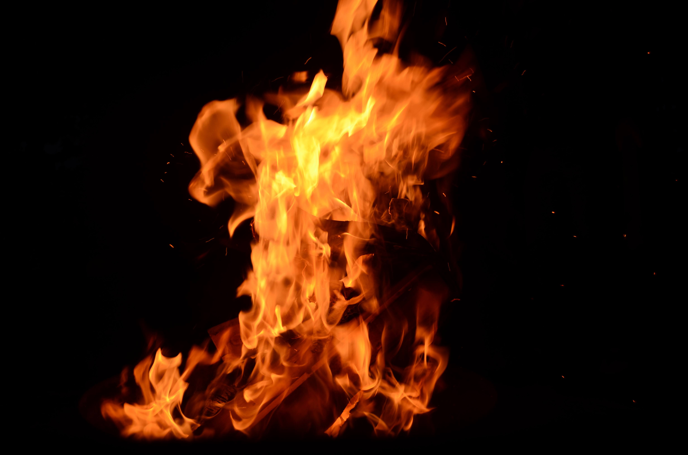
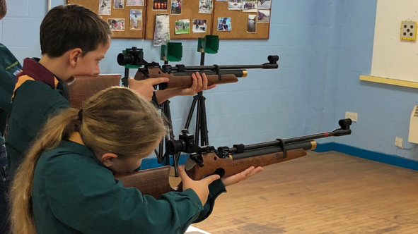

Roman Scouts
We meet at the scout hut or at an alternative venue every Friday evening from 7pm-9pm to engage in fun and exciting activities such as rock climbing, firelighting or wide games at Pinsent.
Why should you join scouts
Scouts offers a range of exciting oppurtunities and experiences including:
Meeting new people and making new friends
Exploring nature and the outdoors
Camps with engaging activities such as hiking, watersports, archery, air rifle shooting, crate stacking rock climbing and many more

Developing your problem solving skills with tasks like navigation and building structures with limited resources
The oppurtunity to be a team leader and help younger scouts along their scounting journey